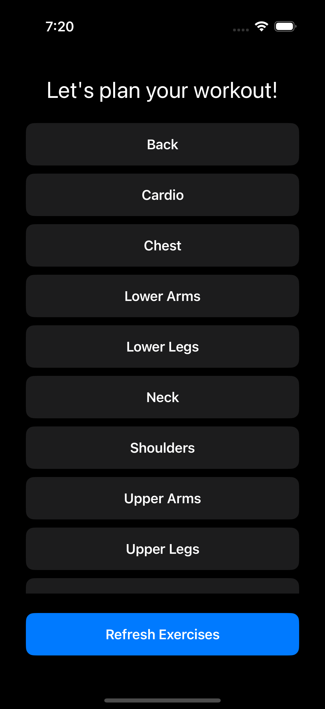
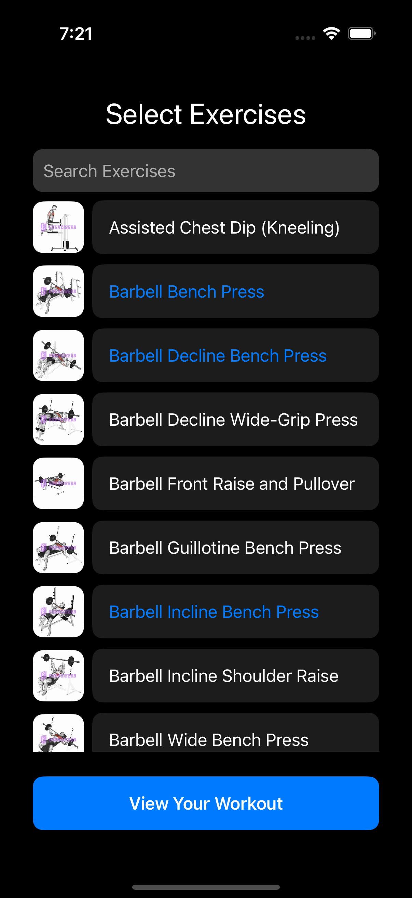
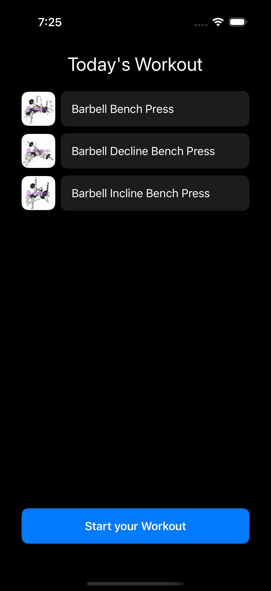
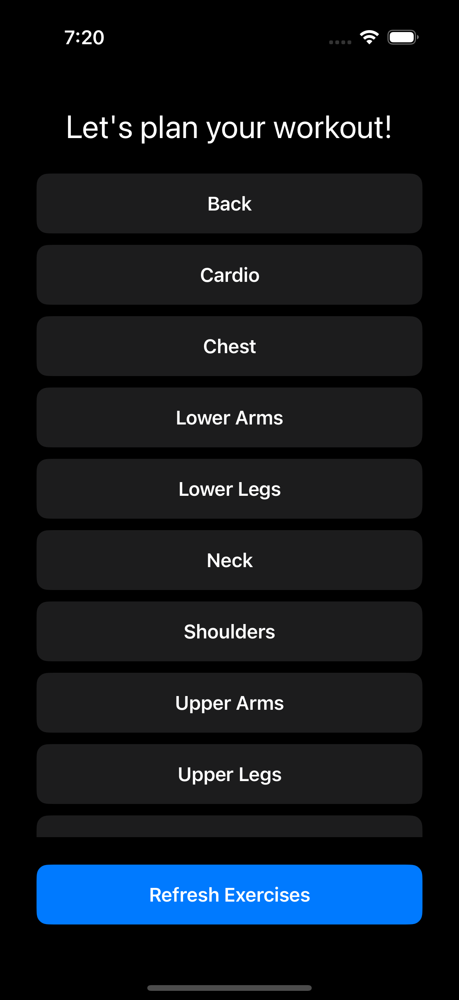
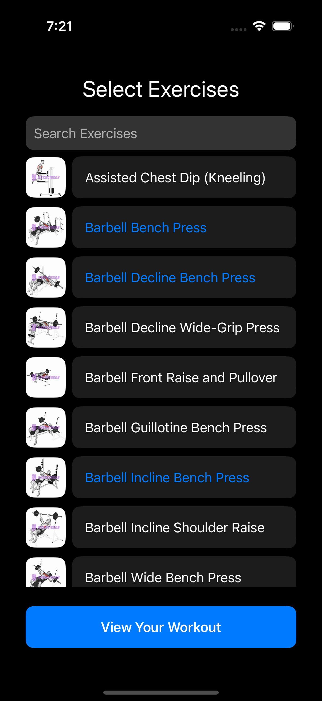
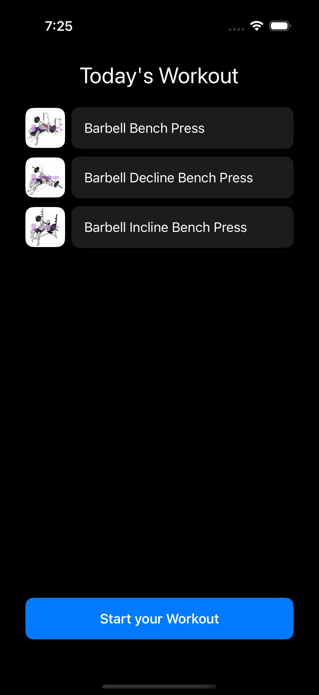

getFIT
Workout Tracking App
getFIT is a fitness tracking app designed to help users plan, log, and monitor their workouts effortlessly. With an intuitive interface, users can create custom workout routines, track sets, reps, and weights, and visualize progress through detailed logs and interactive charts. Whether you're a beginner or a fitness enthusiast, getFIT makes it easy to stay on top of your fitness journey.
 







Key Features:
- Custom Workout Creation – Select exercises and build personalized routines.
- Workout Logging – Track sets, reps, and weight, for every session.
- Progress Tracking – View workout history and analyze trends through charts.
Technologies Used:
- SwiftUI for a modern, responsive UI.
- Swift Charts for progress visualization.